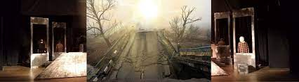
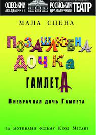
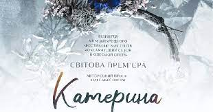

АФІША І КВИТКИ: ТЕАТРИ В ОДЕСІ, Вересень:
15 вересня 2022, чт. 18:00
TASTE OF SUN

ПРО ПОДIЮ
Смак сонця у Львові! Чекаємо на вас2022-09-15 о 18:00на майданчику Театр юного
глядача, Одеса.
Ви можете купити квитки на Смак сонця на Concert.ua онлайн
У зруйнованому війною будинку збираються коти, собаки та стара черепаха.
Усі вони втратили своїх господарів. Що їм робити? Як урятуватися від жахів війни? Як вижити?
Подивіться наше подання у рамках проекту «Відкриті читки» «Смак сонця», і ви дізнаєтесь, хто
допоміг їм
врятуватися.
16 вересня 2022, пт. 18:00
LEVUSHKA
ПРО ПОДIЮ
Левушка в Одесі! Чекаємо на вас2022-09-16 о 18:00на майданчику Театр юного
глядача, Одеса.
Ви можете купити квитки на Левушка на Concert.ua онлайн
В основі оповідання київського драматурга Анатолія Криму «Лівка» - реальна історія, історія
про хлопчика
Льовушку, у якого були дві улюблені бабусі – Розалія Соломонівна та Дарина Іванівна, а просто – бабуся Роза
та бабуся Даша. Обидві бабусі обожнювали свого єдиного онука, змагалися між собою, кого він більше любить, і
куди він ходитиме – до синагоги чи церкви.
Льовушка живе у повоєнному Києві, на Подолі. І атмосфера Льовушкіного двору так нагадує нашу,
одеську – з
хитрими хлопчиками, з люблячими бабусями, з довірою та любов'ю до людей та життя.
17 вересня 2022, сб. 18:00
WE WILL CHEER UP OUR RED VIBURNUM!
ПРО ПОДIЮ
А ми нашу червону калину розвеселимо! в Одесі! Чекаємо на вас2022-09-17 о 18:00на
майданчику
Театр юного
глядача, Одеса.
Ви можете купити квитки на А ми нашу червону калину розвеселимо! на Concert.ua онлайн
Для підняття бойового духу – вірші про Україну, сучасні вірші про війну, байки та жарти, пісні
та танці.
Про кохання, сміх крізь сльози, з вірою в Перемогу.
Сміємося, отже, не здаємось!
17.09 - 17.09 Подiй: 1
ILLEGITIMATE DAUGHTER OF HAMLET

ПРО ПОДIЮ
Цей спектакль про те, як винахідливий драматург намагається створити щось нове на основі
творів великого
Шекспіра.
«Але директор театру має свої погляди на сучасну драматургію, зараз не час веселитися і
віддаватися втіхам.
Поєдинок, який доходить до абсурду у спробах розвеселити публіку!» — йдеться в анонсі.
17 вересня 2022, сб. 18:00
VELVET SEASON. "KATERINA".

ПРО ПОДIЮ
Лібрето та музика «Катерини» були написані сучасним українським композитором Олександром
Родіним на
замовлення Одеської національної опери за ідеєю генеральної директорки-художньої керівниці театру Надії
Бабіч. Вистава пройшла чималий шлях, адже її прем’єра переносилась декілька разів, востаннє 27 березня 2022
року, коли робота театру та виробничих майстерень була призупинена на невизначений термін, а частина
костюмів, які шили в харківських цехах, щоденно перебували під обстрілами.
«Катерина» – наймасштабніша й найдорожча за часів незалежної України постановка театру, в
основу якої
покладено сюжет однойменної поеми Тараса Шевченка «Катерина». Однак команда постановників, працюючи над
оперою, зуміла створити абсолютно унікальний, сучасний мистецький продукт, в якому є місце символізму й
переміщенню у часі, традиції та обряду, містиці, сучасному візуальному рішенню і головне – чудовій музиці,
яку ще не чув світ.